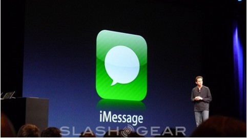
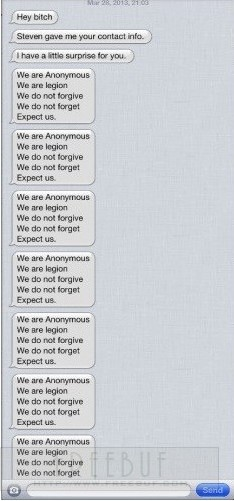

最近，一些iOS的开发者成为iMessage应用DDoS的受害者——应用崩溃或终端被挂。攻击者使用了一个简单的AppleScript脚本，运行后可以快速发出大量的消息，要么导致iMessage应用崩溃，要么被淹没在无休止的告警通知中。
目前来看，好消息是脚本生效只针对终端越狱的一小部分人。然而，坏消息是任何人都可能成为攻击的牺牲品，不管你的终端是否越狱。受害者之一的Grant Paul说，“就是简单的洪水攻击。苹果似乎没有对消息发送的速度进行限制，因此攻击者可以在瞬间发出成千上万条信息。”同时，攻击者还采用了一次性邮件，这样一来，简单地进行邮件过滤就不能解决问题了。
另一位受害者，iH8sn0w说，他是在周三晚上遭受攻击的。他接收到了一长串的信息，内容为：“你好，人类”以及“我们是Anonymous…”。他无法追溯到谁发的电子邮件。开发人员发现攻击者来自一个出售UDID的Twitter账号，该账号专门提供盗版软件。
尽管攻击的范围不是很大，但是存在传播和扩散的趋势。攻击者需要的只是你的电子邮件。由于你需要不断清除这些垃圾信息才可以使用其他应用，因此这些攻击可以很容易的把你的终端挂掉。另外的攻击手段是发送海量的包含unicode字体或超大内容的信息，直接把你的iMessage应用挂掉，并阻止你重新打开它。当前，唯一可行的应对方式是直接禁用iMessage。
但报告作者表示，他们的目的是要提供一种数学上的联系——也就是适用于所有移动数据的一个公式——从而量化匿名性与数据有用性之间的权衡关系，并希望这项研究工作能激发有关“大数据”与个人隐私权的优缺点的争论。
国际隐私权保障组织(Privacy International)的山姆·史密斯(Sam Smith)说道：“我们的手机会向多个组织报告地理位置和上下文数据，而这些组织拥有不同的隐私权政策。”他向BBC新闻频道表示：“我们从这种服务中所获得的任何好处都远远不及这些趋势对隐私权带来的威胁。虽然我们被告知自己在提供多少信息的问题上拥有选择权，但在实际上，个人用户根本就没有什么选择权。”
“科学技术的发展让我们更加难以生活在这样的一个世界中：在这个世界里，人们的隐私权会得到政府的保护，得到公司的尊重，得到个人的珍爱——现在的情况是，文化规范远远落后于科学技术的发展进程。”史密斯说道。
但de Montjoye则强调指出，虽然移动数据会让人们对隐私权问题感到担心，但这些数据所能带来的利益则要大得多。“我们真的不认为应该停止收集或使用这种数据——对我们所有人来说，这种数据都能带来非常大的好处，无论是公司、科学家还是用户。”他说道。“我们已经在努力尝试不要把这种情况描述为‘独裁者’那样的情景，也就是‘我们知道跟你有关的所有事情’。但有一点是不可否认的，那就是即使没有姓名或电子邮件地址，个人数据仍旧可以被获取，因此我们需要这种情况得到相应的对待。”